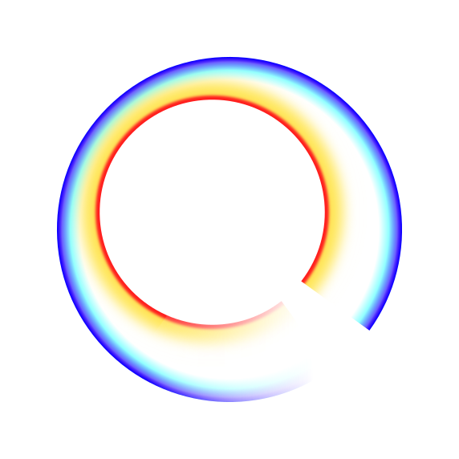

How do new artists find their first true fans?
A fan app and an artist app on one system, from first sketch to v1.0.
- Artists committed
- 50+
- Screens designed
- 700+
 Genc BerishaOpen to remote product design roles
Genc BerishaOpen to remote product design roles
Working remotely - CET · your time
Ask me something
Hi, I'm Genc. Pick a question and I'll answer it the way I would in an interview.
A fan app and an artist app on one system, from first sketch to v1.0.
Mentor onboarding split into short steps that ask one thing at a time.

An aviation training system with a rebuilt structure, so pilots can find their courses.

I started as a developer and studied computer science, so I design things engineers can build, and build them myself when it helps.
I'm happiest early in a product, when the question is still what to build. I like turning messy problems into a few clear decisions, and then sweating the details until they ship.
Before design, I led a tech support team at a leading telecom in Kosovo and grew a YouTube channel to 240k views.

I also run Qualia Lab, a small studio building apps for local businesses.